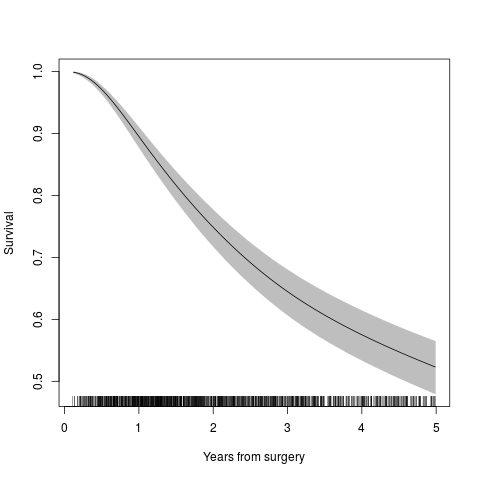
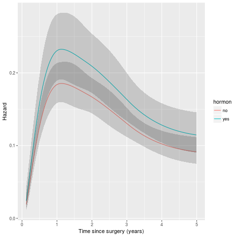
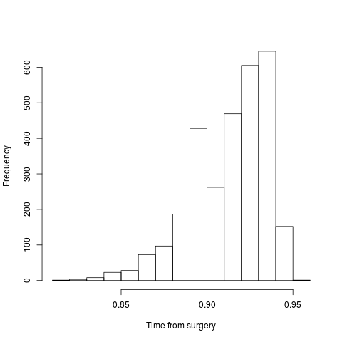
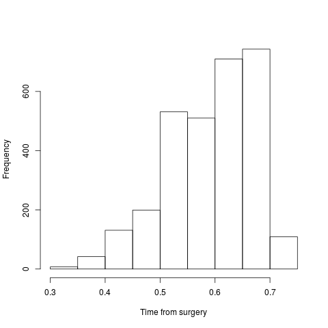
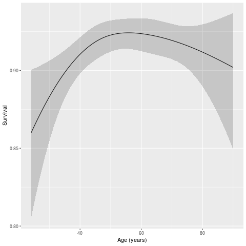
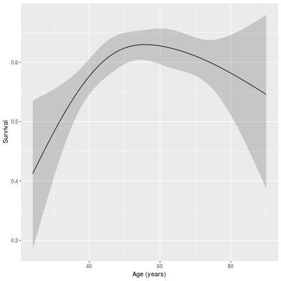

Predictions
1 R implementation for https://pclambert.net/software/stpm2/stpm2_timevar/
library(rstpm2) library(readstata13) suppressWarnings(rott2b <- read.dta13("https://www.pclambert.net/data/rott2b.dta")) rott2b <- transform(rott2b, time = pmin(rf,60)/12) rott2b <- transform(rott2b, event = (rfi==1) & (time < 60/12)) fit <- stpm2(Surv(time,event) ~ hormon + nsx(age,df=3,centre=60,stata=TRUE) + pr_1, data=rott2b, df=4, stata=TRUE) eform(fit)
Profiling...
exp(beta) 2.5 % 97.5 %
(Intercept) 6.055607e-04 5.715701e-04 6.402896e-04
hormonyes 1.253597e+00 1.065865e+00 1.462097e+00
nsx(age, df = 3, centre = 60, stata = TRUE)1 6.550003e-01 5.594371e-01 7.702334e-01
nsx(age, df = 3, centre = 60, stata = TRUE)2 3.449221e-01 1.993938e-01 5.962187e-01
nsx(age, df = 3, centre = 60, stata = TRUE)3 9.626652e-01 7.189637e-01 1.275743e+00
pr_1 9.080228e-01 8.944134e-01 9.214805e-01
nsx(log(time), df = 4)1 4.474345e+02 4.148646e+02 4.799754e+02
nsx(log(time), df = 4)2 1.974220e+02 1.894423e+02 2.047062e+02
nsx(log(time), df = 4)3 5.391834e+04 4.862060e+04 5.986957e+04
nsx(log(time), df = 4)4 7.282589e+01 6.949526e+01 7.650186e+01
nd <- data.frame(age=60, hormon="no", pr_1=0) plot(fit, type="surv", newdata=nd, xlab="Years from surgery")

library(ggplot2) nd <- data.frame(age=60, hormon=c("no","yes"), pr_1=0) haz <- predict(fit, type="haz", newdata=nd, grid=TRUE, se.fit=TRUE, keep=TRUE) haz <- cbind(haz,attr(haz,"newdata")) ggplot(haz, aes(time,group=hormon)) + geom_line(aes(y=Estimate,colour=hormon)) + geom_ribbon(aes(ymin=lower,ymax=upper), alpha=0.2) + xlab("Time since surgery (years)") + ylab("Hazard")

s_time1 <- predict(fit, newdata=transform(rott2b, time=1), type="surv") hist(s_time1,xlab="Time from surgery",main="")

s_time5 <- predict(fit, newdata=transform(rott2b, time=5), type="surv") hist(s_time5,xlab="Time from surgery",main="")

library(ggplot2) nd <- with(rott2b, data.frame(age=seq(min(age), max(age), length=301), hormon="no", pr_1=3.43, time=1)) s <- cbind(nd,predict(fit, newdata=nd, type="surv", se.fit=TRUE)) ggplot(s,aes(age)) + geom_line(aes(y=Estimate)) + geom_ribbon(aes(ymin=lower,ymax=upper),alpha=0.2) + xlab("Age (years)") + ylab("Survival")

s <- cbind(nd,predict(fit, newdata=transform(nd,time=5), type="surv", se.fit=TRUE)) ggplot(s,aes(age)) + geom_line(aes(y=Estimate)) + geom_ribbon(aes(ymin=lower,ymax=upper),alpha=0.2) + xlab("Age (years)") + ylab("Survival")
